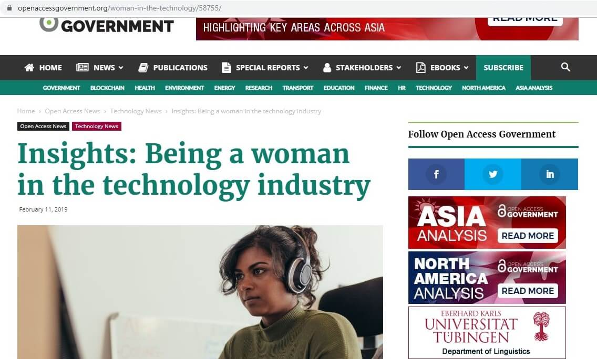

Blogs
The Industry
Existence of being a woman in tech industry gives you all sorts of feelings innovative to lonely. This could be the one reason why I had to question myself in the first year of my Website development course, I asked “Why am I doing the male based course? or why aren't there enough females?”, I think the reason for these questions was clear because there were only 3 female fellow students including myself in a course full of male students. Sometimes the gender split can make huge difference on your learning experience. However, that didn’t stop me from undertaking what I wanted to achieve in fact It encouraged me, to feel proud and unique. Here I am now in my final year completing my degree and I am looking forward to making changes in the tech industry by being the ‘tech woman’ and looking to inspire the new generation.

Being a woman in the technology industry
My inspiration
During my second year I was inspired by successful females in technology industry such as Laura Soutar, who is a Software Engineer, Civica Digital. As I searched up ‘Being woman in the technology industry’ Laura’s blog showed up where she has effectively written here story of being the woman in technology and how she has made her way through and how that changed her and how she sees the world. Laura say’s “we should highlight more women in the media and education system so that they can act as role models” (Open Access Government, 2019), here she is speaking on encouraging the women and women's rights in the industry, more females we encourage to take a step forward, more mentors we have for the young girls to be inspired and lead. Women's rights in the industry like maternity leave and financial support or a female wanting to start a family while continuing to work, these have small changes have already taken part in many countries which is good news but in the technology industry I believe we need to bring paternity benefits up to scratch and this is my aim in the industry development.
Laura Soutar's website (2019).
Industry statistic
4.3 billion internet users Globally, approximately 1.94 billion active websites in the world, even the small businesses have websites reached 64% in 2019, 66 percent of people prefer to read beautifully designed content, mobile devices account for nearly 2 of every 3 minutes spent online and 90% of people use multiple screens sequentially (Tech Jury, 2019). All these facts are representing the importance of website developers and designers in the tech industry. The industry is developing, and we have a new generation stepping forward with great new ideas. 64% of the smaller business decided to grow their business online by developing a website, of course the website makes a huge difference to a business and many organizations started from a small online business to a worldwide known manufacturer.
My future careerAs a website development student, I am looking forward to my future career in the Tech industry in this country because the “UK tech scaleup investment makes up 80% of total tech investment in the UK. This puts the UK in a strong international position to continue creating tech unicorns, and driving job creation up through high growth company activity” (Tech Nation, 2019).
Employment in the cityAccording to the Tech Nation report “The recent growth rate for London tech scaleups at 56% makes the cluster first in the world for scaleup growth” (Tech Nation, 2019). Which means there is a higher chance for people living in London to get the positions and for people like myself living in Manchester might have to move to London to achieve the success. This affects me as an individual who is not planning to move out to another city as this could disturb my family life. However, in the future approximately in few years I believe I can look up for a change in the industrial growth rate in Manchester, because Manchester is a city of students and new talented employees and graduates connected to technology industry will soon make the change, as we all are striving for growth and success.
Reference:
Tech Nation. (2019). UK Tech On The Global Stage. [online] Available at: Website Link [Accessed 28 Oct. 2019].
Tech Nation. (2019). UK Tech On The Global Stage. [online] Available at: Website Link [Accessed 28 Oct. 2019].
Tech Jury. (2019). TechJury: One-stop Tech Guides & Product Reviews. [online] Available at: Website Link [Accessed 28 Oct. 2019].
Open Access Government. (2019). Insights: Being a woman in the technology industry. [online] Available at: Website Link [Accessed 28 Oct. 2019].